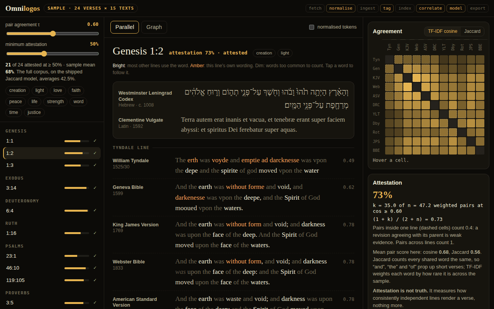

Fetch and ingest
Complete JSON per translation from the scrollmapper/bible_databases set, no auth. Cached files don't re-download and ingested translations don't re-import, so you can interrupt it anywhere.
933,573 verses across thirty public-domain translations, pulled, normalised, tagged, correlated and exported into one navigable graph. Fully local.
A working sample: 24 verses in 15 texts, with the model running live

Hebrew, Greek, Aramaic and Latin sit alongside their English descendants, so agreement can be measured across the whole transmission chain rather than within one branch of it. Omnilogos turns that into a lattice you can walk: book → chapter → verse → word, every node linked, and every verse scored by how consistently independent lines render it.
Complete JSON per translation from the scrollmapper/bible_databases set, no auth. Cached files don't re-download and ingested translations don't re-import, so you can interrupt it anywhere.
Spelling, archaic forms and divine names are folded so loued, loveth and love meet. Twenty themes shipped with 178,666 tags; the stage-8 pass widened it to thirty and reached 253,164 before the run was interrupted.
Every pair of translations is measured verse by verse. The shipped model uses Jaccard similarity; stage 8 moves to TF-IDF cosine, because Jaccard lets short verses score high on shared function words.
A Bayesian score over cross-translation agreement (the corpus mean is 42.5%), exported as 200+ wikilinked markdown books, so Obsidian's graph view renders the whole corpus as a structure, not a search box.
Twenty-four verses in fifteen texts: the Westminster Leningrad Codex, the Textus Receptus, the Clementine Vulgate and twelve English lines from Tyndale (1525) to the Bible in Basic English, all public domain and taken verbatim from the same source the pipeline ingests.
Normalising, TF-IDF, pairwise cosine and the attestation score all run live in your browser. Pairs inside one transmission line count for less, because Geneva agreeing with Tyndale, which it revised, is weak evidence.
The first source, getbible.net, died on an expired SSL certificate partway through. Long sleep chains over the SMB mount blocked everything, and logs written to the share made it worse. Now it launches with nohup, logs to /tmp, and gets checked on separately.
sentence-transformers embeddings for meaning-level agreement, a Greek interlinear, and a search.py CLI. The force graph on this page is the first pass at the graph view that was on the list.
Attestation measures how consistently independent transmission lines render a verse, nothing more, and the vault says so in plain language. Lexical agreement is a proxy: two translations can use different words for the same sense (BBE's controlled vocabulary scores low for exactly that reason), which is what embeddings are for. Psalm numbering differs between traditions, and the sample is aligned by content. The page carries 24 verses; the full corpus lives locally.
Every node is a markdown file with wikilinks. The concordance is a place you can walk.
more in toolskeep scrolling · it opens right here